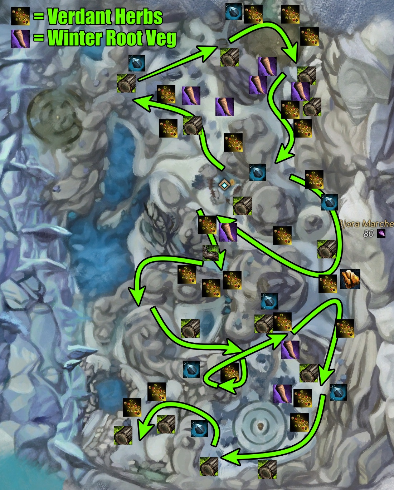

Bjora Marches

In order to receive materials such as variental herbs and quality meats, you need to have completed at least the Charr and Sylvari portion of the Gourmet Training achievement. These materials play a significant role in benchmarks that includes them.
Spreadsheet
To find averages, specific loots, and more, check out the spreadsheet.
Node Farm Calculator
While this farm uses specific Glyphs, check out the Node Farm Calcaulator to test out the estimated profits with different Glyphs. What are displayed in the benchmarks are not neccessarily the best Glyphs to use for maximum profits.
Route:
Start at Still Waters Speaking Waypoint [&BDkMAAA=]. The east side of Bjora does not have as many nodes compared to the west side. There is an abundance of herbs that offer Varietal Peppercorn Seeds. There are a lot of enemies to slow you down so it's best to bring a character that is quick, can dodge easily, or be quick on your feet. It is required to get Raven's Light mastery (2nd from Raven Attunement) otherwise you'll get chilled and frozen.
I did this with about 7 characters. I didn't prep for the farm so they were just using whatever build and weapons they were left off.
